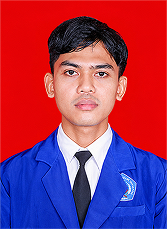

PY
Programming
- Python
Informatics Graduate | Python Developer | Computer Vision Enthusiast
Building Technology Through Code & AI.
Informatics Graduate specializing in Python Development, Artificial Intelligence, and Computer Vision.
Lulusan S1 Teknik Informatika Universitas Muhadi Setiabudi (2026) yang tertarik membangun solusi perangkat lunak berbasis AI, terutama untuk deteksi objek dan pengolahan citra pada kasus industri nyata.

About
Saya Kistanto, lulusan S1 Teknik Informatika Universitas Muhadi Setiabudi, berdomisili di Brebes, Jawa Tengah. Selama masa studi saya mempelajari dasar-dasar rekayasa perangkat lunak, basis data, pemrograman web, hingga kecerdasan buatan.
Ketertarikan saya berfokus pada pengembangan perangkat lunak yang memanfaatkan Artificial Intelligence, khususnya Computer Vision. Proyek tugas akhir saya, SoleGuard, mengintegrasikan model Object Detection berbasis YOLO ke dalam aplikasi Streamlit untuk membantu pemeriksaan cacat produk sepatu.
Saya sedang mencari kesempatan untuk berkontribusi sebagai Software Developer, Python Developer, AI / Machine Learning Engineer, atau Computer Vision Engineer, sambil terus belajar dan mengembangkan kemampuan teknis.
3,43
IPK (skala 4,00)
145
Total SKS
2026
Graduation Year
Skills
Projects
Final Year Project / Artificial Intelligence / Computer Vision
Universitas Muhadi Setiabudi · Studi kasus: PT. Tah Sung Hung
SoleGuard merupakan sistem deteksi cacat produk sepatu menggunakan teknologi Object Detection berbasis YOLOv26n. Model diintegrasikan ke aplikasi berbasis Streamlit untuk membantu proses pemeriksaan produk melalui input video dan fitur deteksi yang tersedia.
Education
2022 – 2026
Sarjana Teknik Informatika
Contact
Terbuka untuk peluang sebagai Software Developer, Python Developer, AI / Machine Learning Engineer, maupun Computer Vision Engineer.